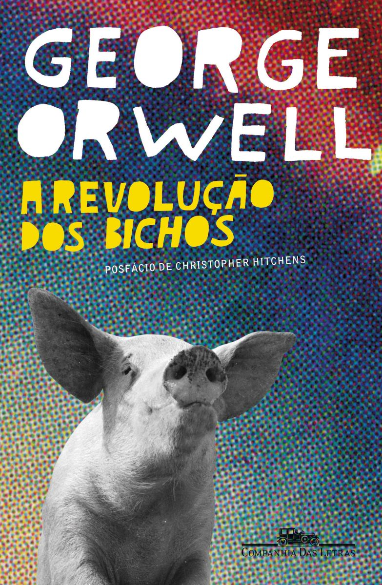

Revolução dos Bichos
🌟🌟🌟🌟⚫ (Nota 4 de 5)

Gênero: Romance satírico
Data de leitura: 04/2025
Resenha: Livro ótimo. Profundo, com referências históricas reais (sátira da URSS). Exige conhecimento de mundo, principalmente histórico e político, para entendimento pleno. Para mim, que amo história, especialmente do século XX, é um prato cheio.